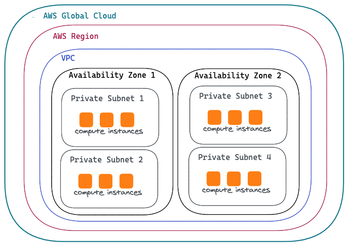

kubectl create -f https://docs.projectcalico.org/archive/v3.16/manifests/tigera-operator.yamlCalico
Table of Contents
安装
Install via operator
1. install the operator
2. Install Calico
cat <<EOF | kubectl apply -f -
apiVersion: operator.tigera.io/v1
kind: Installation
metadata:
name: default
spec:
calicoNetwork:
containerIPForwarding: Enabled
ipPools:
- cidr: 198.19.16.0/21
natOutgoing: Enabled
encapsulation: None
EOF3. Calico pods
$ kubectl get pods -n calico-system
NAME READY STATUS RESTARTS AGE
calico-typha-7fb7f4bd66-fvt89 1/1 Running 2 28m
calico-typha-7fb7f4bd66-gltp8 1/1 Running 2 28m
calico-node-42d6k 1/1 Running 1 28m
calico-typha-7fb7f4bd66-lq6b5 1/1 Running 2 28m
calico-node-tlvbb 1/1 Running 2 28m
calico-kube-controllers-57f767d97b-nxrnx 1/1 Running 3 28m
calico-node-l5n4s 1/1 Running 0 28m-
calico-node: Calico-node runs on every Kubernetes cluster node as a DaemonSet. It is responsible for enforcing network policy, setting up routes on the nodes, plus managing any virtual interfaces for IPIP, VXLAN, or WireGuard.
-
calico-typha: Typha is as a stateful proxy for the Kubernetes API server. It’s used by every calico-node pod to query and watch Kubernetes resources without putting excessive load on the Kubernetes API server. The Tigera Operator automatically scales the number of Typha instances as the cluster size grows.
-
calico-kube-controllers: Runs a variety of Calico specific controllers that automate synchronization of resources. For example, when a Kubernetes node is deleted, it tidies up any IP addresses or other Calico resources associated with the node.
|
Note
|
The Kubernetes network model does specify that pods can communicate with each other directly without NAT. But a pod communicating with another pod via a service is not direct communication, and normally will use NAT to change the connection destination from the service to the backing pod as part of load balancing. |
Install via Manifest
1. Download Manifest
curl https://docs.projectcalico.org/manifests/calico.yaml -O|
Note
|
Uncomment the CALICO_IPV4POOL_CIDR, and make sure the CIDR value equals the value of --pod-network-cidr.
|
2. Install Calico
kubectl apply -f calico.yaml|
Note
|
Refer to LINK for more details. |
3. Calico pods
$ kubectl get pods -A | grep calico
kube-system calico-kube-controllers-855445d444-8rx26 1/1 Running 2 38h
kube-system calico-node-56d8l 1/1 Running 2 38h
kube-system calico-node-r7ltw 1/1 Running 2 38h|
Note
|
Install via Manifest doesn’t contains the calico-typha, which has less performance comapre with Install via operator. |
Install calicoctl
1. Download
curl -o calicoctl -O -L "https://github.com/projectcalico/calicoctl/releases/download/v3.20.1/calicoctl"2. Copy to /usr/local/bin
chmod +x calicoctl
sudo cp calicoctl /usr/local/bin/3. Verify
$ calicoctl get nodes -o wide
NAME ASN IPV4 IPV6
control-plane (64512) 172.16.25.3/24
worker01 (64512) 172.16.25.4/24|
Note
|
Refer to https://docs.projectcalico.org/reference/calicoctl/ for calicoctl reference. |
Deploy YaoBank App
The YaoBank Demo App contains 3 Microservice:

-
Customer (which provides a simple web GUI)
-
Summary (some middleware business logic)
-
Database (the persistent datastore for the bank)
Originally from https://raw.githubusercontent.com/tigera/ccol1/main/yaobank.yaml, the nodeSelector are adjuested, and the docker image are retagged.
1. Deploy YaoBank App
kubectl apply -f yaobank.yaml2. Show YaoBank App
$ kubectl get pods -n yaobank --show-labels --no-headers
customer-cfc847564-dk56j 1/1 Running 0 82s app=customer,pod-template-hash=cfc847564,version=v1
database-644f4569dd-mnncp 1/1 Running 0 83s app=database,pod-template-hash=644f4569dd,version=v1
summary-5877cf8b57-9sc44 1/1 Running 0 82s app=summary,pod-template-hash=5877cf8b57,version=v1
summary-5877cf8b57-kjb7b 1/1 Running 0 82s app=summary,pod-template-hash=5877cf8b57,version=v13. Verify App
$ curl http://control-plane:30180/ -I
HTTP/1.0 200 OK
Content-Type: text/html; charset=utf-8
Content-Length: 593
Server: Werkzeug/0.12.2 Python/2.7.12
Date: Fri, 24 Sep 2021 16:59:18 GMT安全
为什么需要 Network Policy？

-
在容器平台需要基于IP地址或者应用端口进行流量控制（OSI L3、L4）
-
以应用为中心的设计，通过标签匹配的方式控制着应用POD如何被访问
-
K8S 提供了 Network Policy API 接口，但是没有做实现，实现交给 CNI 插件实现厂商，实现与底层网络能力的解耦
-
Network Policy价值
-
攻击者花样更加聪明
-
攻击量更多
-
东西向安全
-
可以让非网络专家配置防火墙。
-
-
南北向安全：Calico Enterprise integrates with Fortinet firewalls, and make Fortinet understands ingress node or pod ip address.
Kubernetes Network Policy 与 Calico 额外增加的 Network Policy
| Kubernetes Network Policy | Calico Network Policy |
|---|---|
|
|
允许来自特定POD的入向访问
如下图所示为允许来自特定POD的入向访问，名称为database的POD只允许来自summary POD的入向访问

1. 查看 database POD 标签
$ kubectl get pods -n yaobank --show-labels | grep database
database-644f4569dd-mnncp 1/1 Running 0 22h app=database,pod-template-hash=644f4569dd,version=v12. 查看 summary POD 标签
$ kubectl get pods -n yaobank --show-labels | grep summary
summary-5877cf8b57-9sc44 1/1 Running 0 22h app=summary,pod-template-hash=5877cf8b57,version=v1
summary-5877cf8b57-kjb7b 1/1 Running 0 22h app=summary,pod-template-hash=5877cf8b57,version=v13. 分别在 customer POD 和summary POD 内访问database
CUSTOMER_POD=$(kubectl get pods -n yaobank -l app=customer -o name)
SUMMARY_POD=$(kubectl get pods -n yaobank -l app=summary -o name | head -n 1)
$ kubectl exec -it $CUSTOMER_POD -n yaobank -- bash
root@customer-cfc847564-dk56j:/app# curl http://database:2379/v2/keys?recursive=true -I -s | head -n 1
HTTP/1.1 200 OK
$ kubectl exec -it $SUMMARY_POD -n yaobank -- bash
root@summary-5877cf8b57-9sc44:/app# curl http://database:2379/v2/keys?recursive=true -I -s | head -n 1
HTTP/1.1 200 OK4. 添加 database-policy
cat <<EOF | kubectl apply -f -
kind: NetworkPolicy
apiVersion: networking.k8s.io/v1
metadata:
name: database-policy
namespace: yaobank
spec:
podSelector:
matchLabels:
app: database
ingress:
- from:
- podSelector:
matchLabels:
app: summary
ports:
- protocol: TCP
port: 2379
egress:
- to: []
EOF-
spec.podSelector.matchLabels- 指定要保护的目标 POD 为 database，具有app=database的标签。 -
spec.ingress.from.podSelector.matchLabels- 指定允许访问的 POD 需具有app=summary标签
5. 重复执行第3步，分别在 customer POD 和summary POD 内访问database*
root@customer-cfc847564-dk56j:/app# curl http://database:2379/v2/keys?recursive=true -I -m 3
curl: (28) Connection timed out after 3001 milliseconds
$ kubectl exec -it $SUMMARY_POD -n yaobank -- bash
root@summary-5877cf8b57-9sc44:/app# curl http://database:2379/v2/keys?recursive=true -I -s | head -n 1
HTTP/1.1 200 OK|
Note
|
对比第三步执行的结果，拒绝来自 customer POD 的请求，而允许来自 summary POD 的请求。 |
6. Clean Up
kubectl delete networkpolicy database-policy -n yaobank设置 Default Deny 策略
1. 访问服务
$ curl http://control-plane:30180 -m 3
<body>
<h1>Welcome to YAO Bank</h1>
<h2>Name: Spike Curtis</h2>
<h2>Balance: 2389.45</h2>
<p><a href="/logout">Log Out >></a></p>
</body>2. 设置 Default Deny 策略
cat <<EOF | kubectl apply -f -
apiVersion: networking.k8s.io/v1
kind: NetworkPolicy
metadata:
name: default-deny
namespace: yaobank
spec:
podSelector: {}
policyTypes:
- Ingress
- Egress
EOF3. 重复步骤 1，访问服务
$ curl http://control-plane:30180 -m 3
curl: (28) Operation timed out after 3001 milliseconds with 0 bytes received4. 分别在 customer POD 和 summary POD 中访问其他 POD
$ kubectl exec -it $CUSTOMER_POD -n yaobank -- bash
root@customer-cfc847564-dk56j:/app# curl http://summary -m 3
curl: (28) Resolving timed out after 3513 milliseconds
root@customer-cfc847564-dk56j:/app# curl http://database:2379/v2/keys?recursive=true -m 3
curl: (28) Resolving timed out after 3512 milliseconds
$ kubectl exec -it $SUMMARY_POD -n yaobank -- bash
root@summary-5877cf8b57-9sc44:/app# curl http://database:2379/v2/keys?recursive=true -m 3
curl: (28) Resolving timed out after 3515 milliseconds5. Clean UP
kubectl delete networkpolicy default-deny -n yaobankyaobank 策略控制最佳实践
1. 设置 Default Deny 策略
cat <<EOF | kubectl apply -f -
apiVersion: networking.k8s.io/v1
kind: NetworkPolicy
metadata:
name: default-deny
namespace: yaobank
spec:
podSelector: {}
policyTypes:
- Ingress
- Egress
EOF基于 namespace 设置 Default Deny 策略，namespace 内所有 POD 出向和入向都被禁止：

2. 基于所有 POD 设定入向和出向策略
cat <<EOF | kubectl apply -f -
kind: NetworkPolicy
apiVersion: networking.k8s.io/v1
metadata:
name: customer-policy
namespace: yaobank
spec:
podSelector:
matchLabels:
app: customer
ingress:
- ports:
- protocol: TCP
port: 80
egress:
- to: []
---
kind: NetworkPolicy
apiVersion: networking.k8s.io/v1
metadata:
name: summary-policy
namespace: yaobank
spec:
podSelector:
matchLabels:
app: summary
ingress:
- from:
- podSelector:
matchLabels:
app: customer
ports:
- protocol: TCP
port: 80
egress:
- to:
- podSelector:
matchLabels:
app: database
ports:
- protocol: TCP
port: 2379
---
kind: NetworkPolicy
apiVersion: networking.k8s.io/v1
metadata:
name: database-policy
namespace: yaobank
spec:
podSelector:
matchLabels:
app: database
ingress:
- from:
- podSelector:
matchLabels:
app: summary
ports:
- protocol: TCP
port: 2379
egress:
- to: []
EOFCalico 策略设定 yaobank 策略控制最佳实践
Kubernetes 定义的 Default Deny 只能基于单个 namespace 设定Default Deny，而 Calico 策略设定 Default Deny 是基于 Kubernetes 全局设定。
1. Default Deny
cat <<EOF | calicoctl apply -f -
apiVersion: projectcalico.org/v3
kind: GlobalNetworkPolicy
metadata:
name: default-app-policy
spec:
namespaceSelector: has(projectcalico.org/name) && projectcalico.org/name not in {"kube-system", "calico-system"}
types:
- Ingress
- Egress
EOF2. 更新全局策略，允许 DNS
cat <<EOF | calicoctl apply -f -
apiVersion: projectcalico.org/v3
kind: GlobalNetworkPolicy
metadata:
name: default-app-policy
spec:
namespaceSelector: has(projectcalico.org/name) && projectcalico.org/name not in {"kube-system", "calico-system"}
types:
- Ingress
- Egress
egress:
- action: Allow
protocol: UDP
destination:
selector: k8s-app == "kube-dns"
ports:
- 53
EOF3. 基于每个 POD 设定出入向策略
cat <<EOF | kubectl apply -f -
kind: NetworkPolicy
apiVersion: networking.k8s.io/v1
metadata:
name: database-policy
namespace: yaobank
spec:
podSelector:
matchLabels:
app: database
ingress:
- from:
- podSelector:
matchLabels:
app: summary
ports:
- protocol: TCP
port: 2379
egress:
- to: []
---
kind: NetworkPolicy
apiVersion: networking.k8s.io/v1
metadata:
name: customer-policy
namespace: yaobank
spec:
podSelector:
matchLabels:
app: customer
ingress:
- ports:
- protocol: TCP
port: 80
egress:
- to: []
---
kind: NetworkPolicy
apiVersion: networking.k8s.io/v1
metadata:
name: summary-policy
namespace: yaobank
spec:
podSelector:
matchLabels:
app: summary
ingress:
- from:
- podSelector:
matchLabels:
app: customer
ports:
- protocol: TCP
port: 80
egress:
- to:
- podSelector:
matchLabels:
app: database
ports:
- protocol: TCP
port: 2379
EOF4. 查看策略
$ calicoctl get GlobalNetworkPolicy
NAME
default-app-policy
$ kubectl get NetworkPolicy -n yaobank
NAME POD-SELECTOR AGE
customer-policy app=customer 4m16s
database-policy app=database 4m15s
summary-policy app=summary 4m15s5. 访问服务
$ curl http://control-plane:30180 -I -s | head -n 1
HTTP/1.0 200 OK6. Clean Up
kubectl delete NetworkPolicy summary-policy -n yaobank
kubectl delete NetworkPolicy customer-policy -n yaobank
kubectl delete NetworkPolicy database-policy -n yaobank
calicoctl delete GlobalNetworkPolicy default-app-policyManaging Trust Across Teams
1. Lockdown Cluster Egress
cat <<EOF | calicoctl apply -f -
apiVersion: projectcalico.org/v3
kind: GlobalNetworkPolicy
metadata:
name: egress-lockdown
spec:
order: 600
namespaceSelector: has(projectcalico.org/name) && projectcalico.org/name not in {"kube-system", "calico-system"}
serviceAccountSelector: internet-egress not in {"allowed"}
types:
- Egress
egress:
- action: Deny
destination:
notNets:
- 10.0.0.0/8
- 172.16.0.0/12
- 192.168.0.0/16
- 198.18.0.0/15
EOF2. Grant Selective Cluster Egress
kubectl label serviceaccount -n yaobank customer internet-egress=allowed3. Clean Up
calicoctl delete GlobalNetworkPolicy egress-lockdownNetwork Policy for Hosts and NodePorts
1. Network Policy for Nodes
cat <<EOF| calicoctl apply -f -
---
apiVersion: projectcalico.org/v3
kind: GlobalNetworkPolicy
metadata:
name: default-node-policy
spec:
selector: has(kubernetes.io/hostname)
ingress:
- action: Allow
protocol: TCP
source:
nets:
- 127.0.0.1/32
- action: Allow
protocol: UDP
source:
nets:
- 127.0.0.1/32
EOF2. Create Host Endpoints
calicoctl patch kubecontrollersconfiguration default --patch='{"spec": {"controllers": {"node": {"hostEndpoint": {"autoCreate": "Enabled"}}}}}'3. Restrict Access to Kubernetes NodePorts
cat <<EOF | calicoctl apply -f -
---
apiVersion: projectcalico.org/v3
kind: GlobalNetworkPolicy
metadata:
name: nodeport-policy
spec:
order: 100
selector: has(kubernetes.io/hostname)
applyOnForward: true
preDNAT: true
ingress:
- action: Deny
protocol: TCP
destination:
ports: ["30000:32767"]
- action: Deny
protocol: UDP
destination:
ports: ["30000:32767"]
EOF4. Selectively allow access to customer front end
cat <<EOF | calicoctl apply -f -
---
apiVersion: projectcalico.org/v3
kind: GlobalNetworkPolicy
metadata:
name: nodeport-policy
spec:
order: 100
selector: has(kubernetes.io/hostname)
applyOnForward: true
preDNAT: true
ingress:
- action: Allow
protocol: TCP
destination:
ports: [30180]
source:
nets:
- 198.19.15.254/32
- action: Deny
protocol: TCP
destination:
ports: ["30000:32767"]
- action: Deny
protocol: UDP
destination:
ports: ["30000:32767"]
EOF5. Clean Up
calicoctl delete GlobalNetworkPolicy default-node-policy
calicoctl delete GlobalNetworkPolicy nodeport-policyPOD Connectivity
Pods Network
1. Exec into the pod
CUSTOMER_POD=$(kubectl get pods -n yaobank -l app=customer -o name)
kubectl exec -ti -n yaobank $CUSTOMER_POD -- /bin/bash2. list interfaces
root@customer-574bd6cc75-9wx6m:/app# ip a
1: lo: <LOOPBACK,UP,LOWER_UP> mtu 65536 qdisc noqueue state UNKNOWN group default qlen 1000
link/loopback 00:00:00:00:00:00 brd 00:00:00:00:00:00
inet 127.0.0.1/8 scope host lo
valid_lft forever preferred_lft forever
inet6 ::1/128 scope host
valid_lft forever preferred_lft forever
3: eth0@if5: <BROADCAST,MULTICAST,UP,LOWER_UP> mtu 1410 qdisc noqueue state UP group default
link/ether 86:2d:a8:72:34:7d brd ff:ff:ff:ff:ff:ff link-netnsid 0
inet 198.19.22.147/32 brd 198.19.22.147 scope global eth0
valid_lft forever preferred_lft forever
inet6 fe80::842d:a8ff:fe72:347d/64 scope link
valid_lft forever preferred_lft forever-
There is a lo loopback interface with an IP address of 127.0.0.1. This is the standard loopback interface that every network namespace has by default. You can think of it as localhost for the pod itself.
-
There is an eth0 interface which has the pods actual IP address, 198.19.22.147. Notice this matches the IP address that kubectl get pods returned earlier.
3. ip link
root@customer-574bd6cc75-9wx6m:/app# ip -c link show up
1: lo: <LOOPBACK,UP,LOWER_UP> mtu 65536 qdisc noqueue state UNKNOWN mode DEFAULT group default qlen 1000
link/loopback 00:00:00:00:00:00 brd 00:00:00:00:00:00
3: eth0@if5: <BROADCAST,MULTICAST,UP,LOWER_UP> mtu 1410 qdisc noqueue state UP mode DEFAULT group default
link/ether 86:2d:a8:72:34:7d brd ff:ff:ff:ff:ff:ff link-netnsid 04. Routing Table
root@customer-574bd6cc75-9wx6m:/app# ip route
default via 169.254.1.1 dev eth0
169.254.1.1 dev eth0 scope link|
Note
|
This shows that the pod’s default route is out over the eth0 interface. i.e. Anytime it wants to send traffic to anywhere other than itself, it will send the traffic over eth0. (Note that the next hop address of 169.254.1.1 is a dummy address used by Calico. Every Calico networked pod sees this as its next hop.) |
5. Exit from the customer pod
exitWireGuard Encryption
1. enabling encryption
calicoctl patch felixconfiguration default --type='merge' -p '{"spec":{"wireguardEnabled":true}}'2. wireguardPublicKey
$ calicoctl get node node1 -o yaml
apiVersion: projectcalico.org/v3
kind: Node
metadata:
annotations:
projectcalico.org/kube-labels: '{"beta.kubernetes.io/arch":"amd64","beta.kubernetes.io/instance-type":"k3s","beta.kubernetes.io/os":"linux","k3s.io/hostname":"node1","k3s.io/internal-ip":"198.19.0.2","kubernetes.io/arch":"amd64","kubernetes.io/hostname":"node1","kubernetes.io/os":"linux","node.kubernetes.io/instance-type":"k3s"}'
creationTimestamp: "2021-08-25T14:20:09Z"
labels:
beta.kubernetes.io/arch: amd64
beta.kubernetes.io/instance-type: k3s
beta.kubernetes.io/os: linux
k3s.io/hostname: node1
k3s.io/internal-ip: 198.19.0.2
kubernetes.io/arch: amd64
kubernetes.io/hostname: node1
kubernetes.io/os: linux
node.kubernetes.io/instance-type: k3s
name: node1
resourceVersion: "22959"
uid: 15122ad5-dfd7-4dfe-9c26-7a637a7088be
spec:
bgp:
ipv4Address: 198.19.0.2/20
orchRefs:
- nodeName: node1
orchestrator: k8s
wireguard:
interfaceIPv4Address: 198.19.22.157
status:
podCIDRs:
- 198.19.17.0/24
wireguardPublicKey: bIuu8myw2pIonLtCqtTf2bmzg4Syswp8m7wKh8C6mT4=3. inspect wireguard from the interfaces
$ ssh node1
$ ip addr | grep wireguard
13: wireguard.cali: <POINTOPOINT,NOARP,UP,LOWER_UP> mtu 1400 qdisc noqueue state UNKNOWN group default qlen 1000
inet 198.19.22.157/32 brd 198.19.22.157 scope global wireguard.cali4. Disabling Encryption
calicoctl patch felixconfiguration default --type='merge' -p '{"spec":{"wireguardEnabled":false}}'IP Pools
-
IP Pools are calico resource which define ranges of addresses that the calico IP address management and IPAM CNI plugin can use.
$ calicoctl get IPPool default-ipv4-ippool -o yaml
apiVersion: projectcalico.org/v3
kind: IPPool
metadata:
creationTimestamp: "2021-08-25T14:43:21Z"
name: default-ipv4-ippool
resourceVersion: "1371"
uid: 218a5773-6fff-48fd-a175-486b9ad66faa
spec:
blockSize: 26
cidr: 198.19.16.0/21
ipipMode: Never
natOutgoing: true
nodeSelector: all()
vxlanMode: Never-
The IP Pool can be per Node, pernamespace
-
To improve performance and scalibility, Calico IPAM to allocates IPs to nodes in blocks.IP 分配是动态的，当一个NODE用完了 64 个地址后，Calico IPAM 会在分配一个新 Block，如果 Block 被分配完了，则会到相邻的 NODE的Block借一个IP。
BGP Peering
-
什么是 BGP
BGP 是一个标准的网络协议，大多数网络路由器都支持 BGP 协议，BGP 协议用来在路由器之间共享和同步路由信息。
Cluster IP Address Ranges
There are two address ranges that Kubernetes is normally configured with that are worth understanding:
-
The cluster pod CIDR is the range of IP addresses Kubernetes is expecting to be assigned to pods in the cluster.
-
The services CIDR is the range of IP addresses that are used for the Cluster IPs of Kubernetes Sevices (the virtual IP that corresponds to each Kubernetes Service).
$ kubectl cluster-info dump | grep -m 2 -E "service-cidr|cluster-cidr"
"k3s.io/node-args": "[\"server\",\"--flannel-backend\",\"none\",\"--cluster-cidr\",\"198.19.16.0/20\",\"--service-cidr\",\"198.19.32.0/20\",\"--write-kubeconfig-mode\",\"664\",\"--disable-network-policy\"]",Create IP Pools
1. Create externally routable IP Pool
cat <<EOF | calicoctl apply -f -
---
apiVersion: projectcalico.org/v3
kind: IPPool
metadata:
name: external-pool
spec:
cidr: 198.19.24.0/21
blockSize: 29
ipipMode: Never
natOutgoing: true
nodeSelector: "!all()"
EOF2. Examine BGP peering status
$ ssh node1
$ sudo calicoctl node status
Calico process is running.
IPv4 BGP status
+--------------+-------------------+-------+----------+-------------+
| PEER ADDRESS | PEER TYPE | STATE | SINCE | INFO |
+--------------+-------------------+-------+----------+-------------+
| 198.19.0.1 | node-to-node mesh | up | 07:25:58 | Established |
| 198.19.0.3 | node-to-node mesh | up | 07:25:56 | Established |
+--------------+-------------------+-------+----------+-------------+
IPv6 BGP status
No IPv6 peers found.3. Add a BGP Peer
cat <<EOF | calicoctl apply -f -
---
apiVersion: projectcalico.org/v3
kind: BGPPeer
metadata:
name: bgppeer-global-host1
spec:
peerIP: 198.19.15.254
asNumber: 64512
EOF4. Examine BGP peering status
$ ssh node1
$ sudo calicoctl node status
Calico process is running.
IPv4 BGP status
+---------------+-------------------+-------+----------+-------------+
| PEER ADDRESS | PEER TYPE | STATE | SINCE | INFO |
+---------------+-------------------+-------+----------+-------------+
| 198.19.0.1 | node-to-node mesh | up | 07:25:58 | Established |
| 198.19.0.3 | node-to-node mesh | up | 07:25:56 | Established |
| 198.19.15.254 | global | up | 08:39:33 | Established |
+---------------+-------------------+-------+----------+-------------+
IPv6 BGP status
No IPv6 peers found.5. Configure a Namespace to use External Routable IP Addresses
cat <<EOF| kubectl apply -f -
---
apiVersion: v1
kind: Namespace
metadata:
annotations:
cni.projectcalico.org/ipv4pools: '["external-pool"]'
name: external-ns
EOF6. Deploy Nginx
cat <<EOF| kubectl apply -f -
---
apiVersion: apps/v1
kind: Deployment
metadata:
name: nginx
namespace: external-ns
spec:
replicas: 1
selector:
matchLabels:
app: nginx
template:
metadata:
labels:
app: nginx
version: v1
spec:
containers:
- name: nginx
image: nginx
imagePullPolicy: IfNotPresent
nodeSelector:
kubernetes.io/hostname: node1
---
kind: NetworkPolicy
apiVersion: networking.k8s.io/v1
metadata:
name: nginx
namespace: external-ns
spec:
podSelector:
matchLabels:
app: nginx
policyTypes:
- Ingress
- Egress
ingress:
- ports:
- protocol: TCP
port: 80
EOF7. Access the NGINX pod from outside the cluster
$ kubectl get pods -n external-ns -o wide --no-headers
nginx-8c44c96c6-xtw74 1/1 Running 0 70s 198.19.28.208 node1 <none> <none>
$ curl 198.19.28.208 -I
HTTP/1.1 200 OK
Server: nginx/1.21.1
Date: Sat, 28 Aug 2021 08:48:10 GMT
Content-Type: text/html
Content-Length: 612
Last-Modified: Tue, 06 Jul 2021 14:59:17 GMT
Connection: keep-alive
ETag: "60e46fc5-264"
Accept-Ranges: bytes8. Check Calico IPAM allocations statistics
$ calicoctl ipam show
+----------+----------------+-----------+------------+-------------+
| GROUPING | CIDR | IPS TOTAL | IPS IN USE | IPS FREE |
+----------+----------------+-----------+------------+-------------+
| IP Pool | 198.19.16.0/21 | 2048 | 12 (1%) | 2036 (99%) |
| IP Pool | 198.19.24.0/21 | 2048 | 1 (0%) | 2047 (100%) |
+----------+----------------+-----------+------------+-------------+Kubernetes Services Networking
kube-proxy service debug
1. List the services
$ kubectl get svc -n yaobank
NAME TYPE CLUSTER-IP EXTERNAL-IP PORT(S) AGE
database ClusterIP 198.19.33.67 <none> 2379/TCP 2d23h
summary ClusterIP 198.19.46.158 <none> 80/TCP 2d23h
customer NodePort 198.19.32.122 <none> 80:30180/TCP 2d23h2. List the endpoints for each of the services
$ kubectl get endpoints -n yaobank
NAME ENDPOINTS AGE
customer 198.19.22.156:80 2d23h
database 198.19.21.74:2379 2d23h
summary 198.19.21.7:80,198.19.21.8:80 2d23h3. List the pods
$ kubectl get pods -n yaobank -o wide --no-headers
database-6c5db58d95-nnwsp 1/1 Running 2 2d23h 198.19.21.74 node2 <none> <none>
summary-85c56b76d7-v8vs6 1/1 Running 2 2d23h 198.19.21.7 control <none> <none>
summary-85c56b76d7-nn9fv 1/1 Running 2 2d23h 198.19.21.8 control <none> <none>
customer-574bd6cc75-9wx6m 1/1 Running 2 2d23h 198.19.22.156 node1 <none> <none>ClusterIP

1. KUBE-SERVICES → KUBE-SVC-XXXXXXXXXXXXXXXX
$ ssh control
$ sudo iptables -v --numeric --table nat --list KUBE-SERVICES | grep summary
0 0 KUBE-MARK-MASQ tcp -- * * !198.19.16.0/20 198.19.46.158 /* yaobank/summary:http cluster IP */ tcp dpt:80
0 0 KUBE-SVC-OIQIZJVJK6E34BR4 tcp -- * * 0.0.0.0/0 198.19.46.158 /* yaobank/summary:http cluster IP */ tcp dpt:802. KUBE-SVC-OIQIZJVJK6E34BR4 → KUBE-SEP-XXXXXXXXXXXXXXXX
$ sudo iptables -v --numeric --table nat --list KUBE-SVC-OIQIZJVJK6E34BR4
Chain KUBE-SVC-OIQIZJVJK6E34BR4 (1 references)
pkts bytes target prot opt in out source destination
0 0 KUBE-SEP-GRMQA4KZODSYCGHU all -- * * 0.0.0.0/0 0.0.0.0/0 /* yaobank/summary:http */ statistic mode random probability 0.50000000000
0 0 KUBE-SEP-HE4BCN24RMUDWA6V all -- * * 0.0.0.0/0 0.0.0.0/0 /* yaobank/summary:http */3. KUBE-SEP-XXXXXXXXXXXXXXXX → summary endpoint
$ sudo iptables -v --numeric --table nat --list KUBE-SEP-GRMQA4KZODSYCGHU
Chain KUBE-SEP-GRMQA4KZODSYCGHU (1 references)
pkts bytes target prot opt in out source destination
0 0 KUBE-MARK-MASQ all -- * * 198.19.21.7 0.0.0.0/0 /* yaobank/summary:http */
0 0 DNAT tcp -- * * 0.0.0.0/0 0.0.0.0/0 /* yaobank/summary:http */ tcp to:198.19.21.7:80NodePort

1. KUBE-SERVICES → KUBE-NODEPORTS
$ sudo iptables -v --numeric --table nat --list KUBE-SERVICES | grep KUBE-NODEPORTS
619 37158 KUBE-NODEPORTS all -- * * 0.0.0.0/0 0.0.0.0/0 /* kubernetes service nodeports; NOTE: this must be the last rule in this chain */ ADDRTYPE match dst-type LOCAL2. KUBE-NODEPORTS → KUBE-SVC-XXXXXXXXXXXXXXXX
$ sudo iptables -v --numeric --table nat --list KUBE-NODEPORTS | grep customer
0 0 KUBE-MARK-MASQ tcp -- * * 0.0.0.0/0 0.0.0.0/0 /* yaobank/customer:http */ tcp dpt:30180
0 0 KUBE-SVC-PX5FENG4GZJTCELT tcp -- * * 0.0.0.0/0 0.0.0.0/0 /* yaobank/customer:http */ tcp dpt:301803. KUBE-SVC-XXXXXXXXXXXXXXXX → KUBE-SEP-XXXXXXXXXXXXXXXX
$ sudo iptables -v --numeric --table nat --list KUBE-SVC-PX5FENG4GZJTCELT
Chain KUBE-SVC-PX5FENG4GZJTCELT (2 references)
pkts bytes target prot opt in out source destination
0 0 KUBE-SEP-5S2QR7W7CXIFMZTT all -- * * 0.0.0.0/0 0.0.0.0/0 /* yaobank/customer:http */4. KUBE-SEP-XXXXXXXXXXXXXXXX → customer endpoint
$ sudo iptables -v --numeric --table nat --list KUBE-SEP-5S2QR7W7CXIFMZTT
Chain KUBE-SEP-5S2QR7W7CXIFMZTT (1 references)
pkts bytes target prot opt in out source destination
0 0 KUBE-MARK-MASQ all -- * * 198.19.22.156 0.0.0.0/0 /* yaobank/customer:http */
0 0 DNAT tcp -- * * 0.0.0.0/0 0.0.0.0/0 /* yaobank/customer:http */ tcp to:198.19.22.156:80NodePort SNAT
1, Access the customer service via nodeport
$ curl 198.19.0.1:30180
$ curl 198.19.0.2:30180
$ curl 198.19.0.3:301802. View the customer pod logs
$ kubectl logs customer-574bd6cc75-9wx6m -n yaobank
198.19.0.1 - - [28/Aug/2021 15:14:21] "GET / HTTP/1.1" 200 -
198.19.0.2 - - [28/Aug/2021 15:16:54] "GET / HTTP/1.1" 200 -
198.19.0.3 - - [28/Aug/2021 15:17:03] "GET / HTTP/1.1" 200 -Calico Native Service Handling
-
Calico eBPF data plane supports native service handling.
-
Calico’s eBPF dataplane is an alternative to the default standard Linux dataplane (which is iptables based). The eBPF dataplane has a number of advantages:
-
It scales to higher throughput.
-
It uses less CPU per GBit.
-
It has native support for Kubernetes services (without needing kube-proxy) that:
-
Reduces first packet latency for packets to services.
-
Preserves external client source IP addresses all the way to the pod.
-
Supports DSR (Direct Server Return) for more efficient service routing.
-
Uses less CPU than kube-proxy to keep the dataplane in sync.
-
-
1. Configure Calico to connect directly to the API server
cat <<EOF | kubectl apply -f -
---
kind: ConfigMap
apiVersion: v1
metadata:
name: kubernetes-services-endpoint
namespace: tigera-operator
data:
KUBERNETES_SERVICE_HOST: "198.19.0.1"
KUBERNETES_SERVICE_PORT: "6443"
EOF2. recreated with the new configuration
kubectl delete pod -n tigera-operator -l k8s-app=tigera-operator3. Disable kube-proxy
calicoctl patch felixconfiguration default --patch='{"spec": {"bpfKubeProxyIptablesCleanupEnabled": false}}'4. Switch on eBPF mode
calicoctl patch felixconfiguration default --patch='{"spec": {"bpfEnabled": true}}'5. restart YAO Bank’s customer and summary pods
kubectl delete pod -n yaobank -l app=customer
kubectl delete pod -n yaobank -l app=summarySource IP preservation

1, Access the customer service via nodeport
$ curl 198.19.0.1:30180
$ curl 198.19.0.2:30180
$ curl 198.19.0.3:30180Advertising Services
1. Update Calico BGP configuration
cat <<EOF | calicoctl apply -f -
---
apiVersion: projectcalico.org/v3
kind: BGPConfiguration
metadata:
name: default
spec:
serviceClusterIPs:
- cidr: "198.19.32.0/20"
EOFKubernetes Networking with AWS
AWS Networking

-
AWS Global Cloud - Devices and Services in many regions.
-
AWS Region - A physical location around the world where Amazon have equipment in data centers .
-
Virtual Private Cloud(VPC) - A logically isolated virtual private network that exists within AWS cloud. VPC can span AZ in a region.
-
Availability Zone(AZ) - A group of data centers in a region, each AZ has independent power, cooling, and physical security and is connected via multiple physical networks.
-
Subnet - A subnet is a section of VPC’s IP range, a subnet must be reside within a single AZ,
-
Elastic Network Interfaces(ENI) - A logical networking component in a VPC that represents a virtual network card.
AWS-CNI 优缺点
| 优点 | 缺点 |
|---|---|
|
|
KOps
-
Like kubectl for clusters
-
Strengths
-
Builds production-grade clusters
-
Builds highly available cluster
-
Also provisions the necessary cloud infrastructure
-
Access to all of the Calico’s feature
-
AWS is offically support
-
idempotent
-
1. KOps Create Cluster
kops create cluster --zones ap-northeast-1a,ap-northeast-1c --networking calico --name ${CLUSTER_NAME}
kops update cluster --name ${CLUSTER_NAME} --yes --admin2. KOps Get Cluster
kops get clusterTODO
**
**
**
**
**
**
**
**
**
**
**
**
**
**